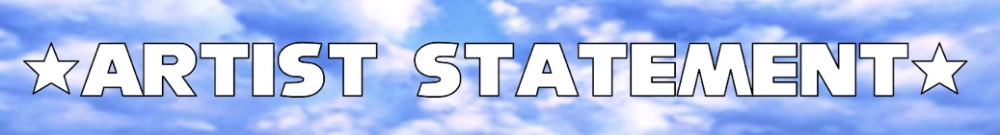

My final project is a mix of Pixel art, memes, and Net Art, all digitally drawn by via Photoshop, Adobe Illustrator, and Procreate. The mediums depicted in this final were my favorite to create during this semester. Firstly, I wanted to do Pixel Art, as it was the very first projects we've done in class and to show how the said medium plays a role in the Digital Art Media industry. I only created one through out the semester and decided to make the entire final project out of it. Secondly, I wanted to add humor into the piece by putting Memes. My goal is to make the viewer react to the said artwork as I'm always interested in hearing what they have to say, even feedback helps. Lastly, the website is updated and more "sleek" version of my "NET ART 2025" project as I wasn't pleased with the final results and thought it looked "very disorganized", "incomplete" due to the lack of background, and, overall, did not meet the criteria of aiming for an old internet inspired website. So, as a response, I decided to try again, saw what worked and what didn't, begin polishing up the website, and looked up tutorials in order to improve from the last project. In the end, this website aimed for more a very calming vibe and became more of a Museum & (digital) Art gallery inspired by the "ECHOS OF EXPRESSION" Gallery.
[An artist depiction of Shari studying hard to achieve on her artistic endeavors while, in the background, an artist depiction of artificial intelligence is just standing there...menacingly...]